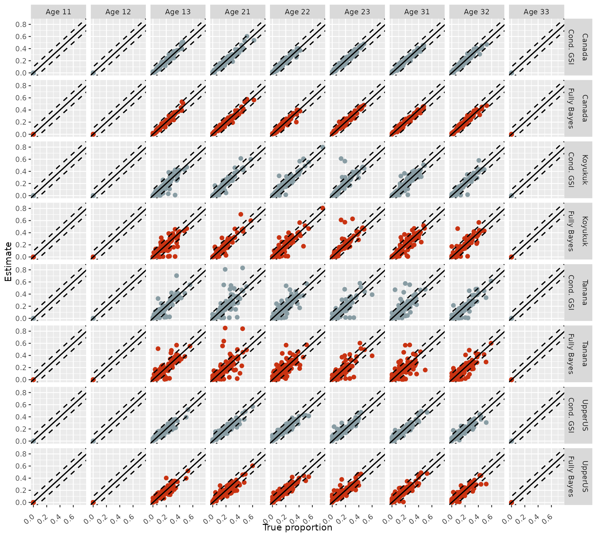
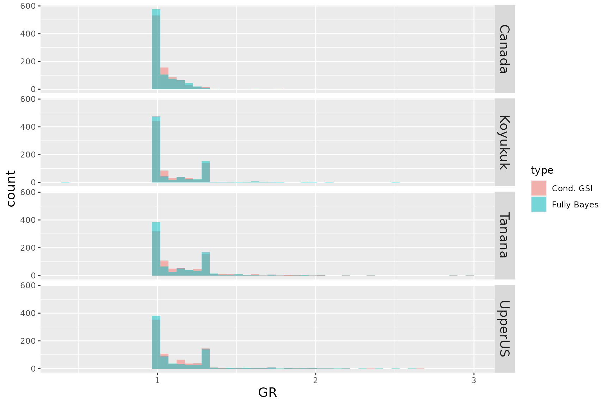
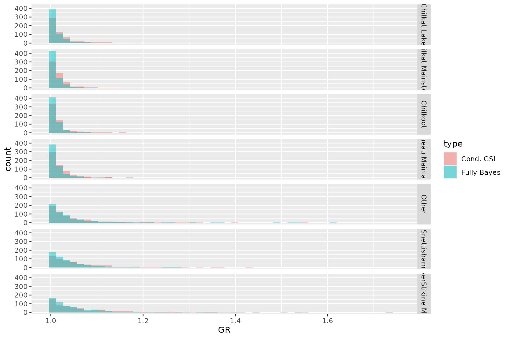

Comparing MAGMA model algorithms
Conditional GSI Vs. Fully Bayesian
Bobby Hsu
December 17, 2025
Source:vignettes/articles/mdl_comparison.Rmd
mdl_comparison.RmdObjectives
- Compare model algorithms of “fully Bayesian” and “conditional GSI” of MAGMA by assessing error, deviation, bias and MCMC convergence of the estimates.
Background
MAGMA is a Bayesian mixture model used for GSI applications. When we “run” the MAGMA model, we employ a MCMC algorithm to estimate stock proportions, age-by-stock composition, and individual group membership assignments. MAGMA algorithm is modified from a mixture model first developed by Pella and Masuda (2001; i.e., Pella-Masuda model or “fully Bayesian” model). The underlying principles of MAGMA and Pella-Masuda models are the same, except that MAGMA incorporates age and marking information in addition to the genetics. Also, MAGMA is designed for analyses containing multiple strata, which makes running MAGMA model more computationally intensive than the Pella-Masuda model.
That is not to say that the Pella-Masuda model is simple; it has an intricate algorithm and running the program BAYES can be a time-consuming process. To decrease time spent on running the model (and improve convergence of the MCMC sampler), Moran and Anderson (2018) developed a conditional mixture model by modifying the Pella-Masuda model. The conditional model (i.e., “conditional GSI”) streamlines the fully Bayesian algorithm by eliminating a step to recalculate allele frequencies of the baseline populations. This step is often referred to as “baseline re-sampling,” where, at each iteration of MCMC sampling, mixture individuals are assigned a new population membership, and the allele frequencies of each population can shift due to changes in its membership. Therefore, in the fully Bayesian algorithm, allele frequencies are re-calculated at each iteration. This step can be computational intensive with a large mixture sample and/or a big genetic marker set.
Moran and Anderson (2018) found that the baseline re-sampling step can be mathematically integrated out of the model algorithm, and the resulting conditional model would yield the same results as the fully Bayesian model without the computationally intensive calculations. We incorporate the conditional model in the sampling algorithm for MAGMA, but with some modifications to incorporate age and marking information. Basically, our modifications to MAGMA algorithm are a hybrid of the fully Bayesian and the conditional models.
However, we have not assessed the effects of the hybrid model on the estimation in a MAGMA setting. In this document, I use a cross-validation analysis to assess the possible effects of the hybrid conditional GSI on the accuracy and precision of the MAGMA model.
Update for October 2024 (Lynn Canal)
I updated the analysis with Lynn Canal sockeye baseline and a multi-stratum set up. Lynn Canal post-season reporting has 251 collections divided into seven groups. Majority of collections are included in the “Other” reporting group. For age, there are 15 classes total. Five of them are major age classes (03, 12, 13, 22, 23), and the rest are included in “other.”
Methods
Yukon Chinook
I used a Yukon Chinook baseline for the simulation. The Chinook baseline was modified in a previous analysis and contained only a portion of the original collections. This modified baseline had a marker-set of 380 loci that could differentiate Chinook salmon among four reporting groups from the middle/upper Yukon River (Koyukuk, Tanana, Upper U.S., and Canada; Lee et al. 2021). I used the modified baseline to generate 100 sets of MAGMA mixtures (one district, one subdistrict, and one week) with randomly set age-by-stock compositions, and ran the mixtures using hybrid conditional GSI and fully Bayesian algorithms. Finally, I calculated and compared root mean-square-errors (RMSE), deviations, and mean bias for the 100 simulations.
Procedures for generating one set of MAGMA data are as follows:
Randomly set proportions for the four reporting groups. Based on the set proportions, randomly allocate 190 individuals to populations within each reporting group.
Simulate genotypes of mixture individuals based on the baseline allele frequencies corresponding to their assigned population memberships. The simulated values are drawn from multinomial distributions.
randomly set proportions for the age-by-stock compositions. The age-by-stock composition is a matrix with rows represent reporting groups and columns represent age classes. There are nine age classes and they are ages 1.1, 1.2, 1.3, 2.1, 2.2, 2.3, 3.1, 3.2, and 3.3. The proportions for ages 1.1, 1.2, and 3.3 are always 0’s in this analysis, and the rest are randomly set. The age proportions within each reporting group add up to 1.
Assign an age for each mixture individual based on its assigned reporting group membership. Randomly withheld the age identities for 15% of the mixture individuals.
Format the data set for MAGMA model (using
magmatize data()function). There is only one district, one subdistrict, and one week in the mixture data set.
I ran each of the 100 MAGMA data sets with two model algorithms: 1) “conditional GSI”: a hybrid algorithms that re-sample baseline allele frequencies every 10th iteration and 2) “fully Bayesian”: re-sample baseline allele frequencies every iteration. I ran each model with 1,000 iterations, 500 burn-ins, no thinning, and four chains with “zero out” age priors.
I compared the posterior means and the true proportions of the nine age classes and calculated RMSE and bias/deviation. RMSE is calculated as , where was the number of cross-validation analyses, was the true proportion of age for the th analysis, and was the posterior mean proportion of age for the th analysis. Mean bias was the mean of the differences between the posterior mean and the true proportion of each age class for each cross-validation analysis. “Deviation 0.1” quantified the portion of the cross-validation analyses with absolute biases greater or equal to 0.1.
Update for October 2024 (Lynn Canal)
Simulations for Lynn Canal followed the same procedures as before, with addition of multiple strata. There were one district and two subdistricts with two weeks each. Age-by-stock composition was a matrix for the whole district. I ran two sets of simulations. The first set had 0 portion for all minor age classes. The second set had a small portion (randomly set) for some of the minor age classes.
Harvest were randomly selected from the 2023 harvest record to represent a simulated harvest for the four strata in each iteration of the analysis. Sample size for each stratum was randomly drawn from a negative binomial distribution with a mean of 190 fish and a dispersion parameter of 8 (Neg-bin( = 190, size = 8)).
Results
Yukon Chinook
Precision
I plotted the comparisons between the posterior means and the true values and the performances were similar between the two algorithms for the four reporting groups (Figure 1).
 Figure 1: Comparison between the posterior means and the true values of the 100 cross-validation analyses for the two model algorithms: ‘Cond. GSI’ and ‘Fully Bayes.’ Diagonal line represents 1:1 relationship between the true proportions and the posterior means. Dashed lines mark the ± 0.1 deviation from the 1:1 line.
RMSE
The performances of the two algorithms were similar. If you squint really hard, you might find that conditional GSI had slightly lower RMSE’s for Koyukuk and Tanana (Table 1; Figure 2).
Table 1: Comparison of root mean-square-errors for each age class among the two model algorithms.
Figure 2: Root mean-square-errors of each age class for the two model algorithms.
Bias
The two algorithms of MAGMA exhibited similar amount of biases (or lack thereof) for the four reporting groups (Figure 3).
Figure 3: Bias of each age class for the two model algorithms.
Deviation 0.1
Hybrid conditional GSI seemed to perform slightly better than fully Bayesian algorithm overall (Table 2; Figure 4).
Table 2: Comparison of deviation for each age class among the two model algorithms.
 Figure 4: Deviation
0.1 of each age class for the two model algorithms.
Figure 4: Deviation
0.1 of each age class for the two model algorithms.
Gelman-Rubin diagnostic (GR)
I also compared the convergence of the posterior samples between the two algorithms by plotting the Gelman-Rubin shrink factor (GR) of 100 simulations in overlapping histograms (Figure 5). The convergence seemed to be similar between the two algorithms.
 Figure 5: Gelman-Rubin diagnostic (GR) of each reporting group for the two model algorithms.
Update for October 2024 (Lynn Canal)
Precision
Comparisons between the posterior means and the true values showed that the performances were similar between the two algorithms for the seven reporting groups of the Lynn Canal sockeye baseline (Figure 6).
Figure 6: Comparison between the posterior means and the true values of the 100 cross-validation analyses for the two model algorithms, ‘Cond. GSI’ and ‘Fully Bayes,’ using the Lynn Canal sockeye baseline. Diagonal line represents 1:1 relationship between the true proportions and the posterior means. Dashed lines mark the ± 0.1 deviation from the 1:1 line.
RMSE
Errors of the two algorithms were similar for the Lynn Canal sockeye baseline (Table 3; Figure 7).
Table 3: Comparison of root mean-square-errors for each age class among the two model algorithms.
Figure 7: Root mean-square-errors of each age class for the two model algorithms using Lynn Canal sockeye baseline.
Bias
The two algorithms of MAGMA exhibited similar amount of biases for the seven reporting groups of the Lynn Canal sockeye baseline (Figure 8).
Figure 8: Bias of each age class for the two model algorithms using Lynn Canal sockeye baseline.
Deviation 0.1
The two model configurations seemed to have similar performance with Lynn Canal sockeye baseline (Table 4; Figure 9).
Table 4: Comparison of deviation for each age class among the two model algorithms.
Figure 9: Deviation 0.1 of each age class for the two model algorithms using Lynn Canal sockeye baseline.
Gelman-Rubin diagnostic (GR)
I also compared the convergence of the posterior samples between the two algorithms by plotting the Gelman-Rubin shrink factor (GR) of 100 simulations in overlapping histograms (Figure 10). The convergence seemed to be similar between the two algorithms with Lynn Canal sockeye baseline.

Figure 10: Gelman-Rubin diagnostic (GR) of each reporting group for the two model algorithms.
Discussion
Yukon Chinook
The comparison of 100 cross-validation analyses of the two algorithms showed similar precision, RMSE, and bias for the major age classes. Hybrid conditional GSI showed slightly less deviations compared to the fully Bayesian algorithm. It is unclear that the slightly lower portions of deviations for the hybrid conditional GSI were due to chances or actually an indication of better performance of the algorithm. However, comparison of convergence diagnostics show little differences between the two algorithms.
The performance of the two MAGMA algorithms seems to be comparable, but the running time of the hybrid conditional GSI was shorter. If we considered time to run the MAGMA model as the monetary currency, hybrid conditional GSI is like a Chinese electric vehicle with the same performance but a fraction of the price compared to its US and European counterpart. From that perspective, there seems to be a clear benefit to run MAGMA using hybrid conditional GSI algorithm1.
It is worth noting that this analysis is not comprehensive because there was only one stratum in the simulation. MAGMA is usually run in a multi-stratum scenario, and the effects of multiple strata was untested in this analysis. Also, the analysis was tested using a baseline from a region that has not used MAGMA. Further assessments should be done with other baselines (preferably from regions that have employed MAGMA) to ensure that different baselines yield the same results.
Update for October 2024 (Lynn Canal)
The hybrid conditional GSI and the traditional fully Bayesian algorithms showed similar accuracy and precision in the cross-validation analysis using Lynn Canal sockeye baseline in a multi-stratum scenario. The results were consistent to the previous analysis using a Yukon Chinook baseline.
References
Lee, E., Dann, T., Hoyt, H. (2021). Yukon River Chinook Genetic Baseline Improvements. Yukon River Panel Restoration and Enhancement Fund Final Report, URE-163-19N.
Moran, B.M. and E.C. Anderson. 2018. Bayesian inference from the conditional genetic stock identification model. Canadian Journal of Fisheries and Aquatic Sciences. 76(4):551-560.
Pella, J. and M. Masuda. 2001. Bayesian methods for analysis of stock mixtures from genetic characters. Fish. Bull. 99:151–167.